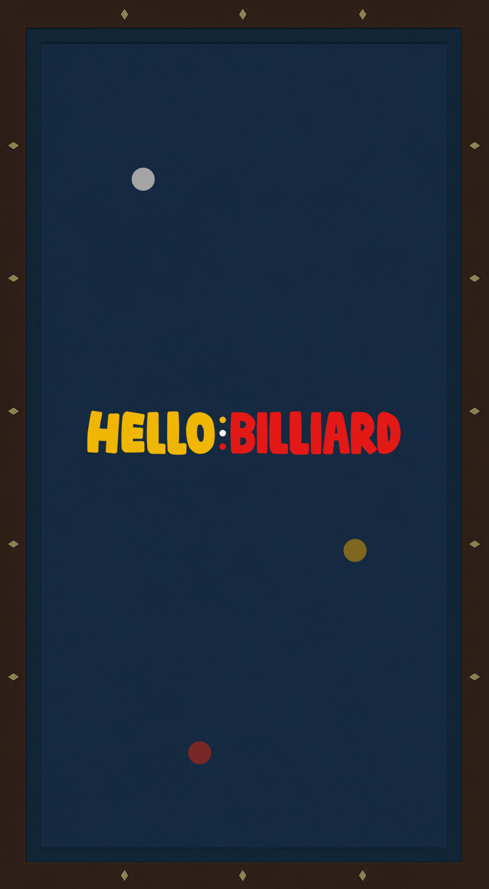
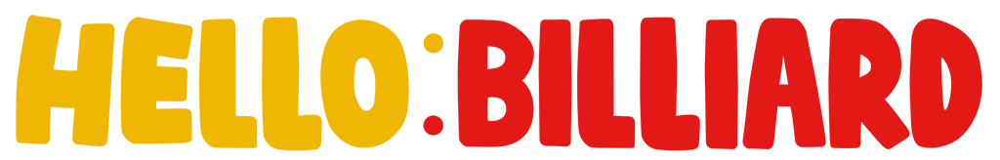

당구 AI 코치 — 4구 경로 시뮬레이터 + 3구 시스템 계산기The engine searches scoring paths by combining no-spin, draw, follow and left/right english, then suggests up to 5 paths with different strategies. Tap a card to show that path on the table.
v4 physics engine · a time-step simulation scaled to real proportions (ball 65.5mm / table 2844mm). It integrates the slide→roll friction transition, so draw/follow curves and post-cushion swerve are reproduced (Alciatore data: rolling half-ball separation ≈34°, stun ≈90° tangent line). All four balls are tracked, and kiss and foul (opponent-cue contact) paths are filtered out. Besides direct shots, it also searches bank shots (1–2 cushions first, then to the object ball). The card's success rate (%) is not real user stats — it's the expected scoring ratio over a 90-shot Monte-Carlo that adds skill-based execution error to aim, power and english. Shots that happen to bank in and score also count per the rules.
Skill · Beginner uses only no-spin/draw/follow, and only within half a tip of center (no extreme high/low english), excludes thin cuts and uses larger execution error, so success rates read realistically. Advanced uses every technique incl. mixed english & thin cuts with precise error. The card's gather (%) is a weighted average giving 50% to the gap between the two reds and 25% each to the cue→each-red approach distance from the next shot's start, showing how favorable the leave is (setting shared with the 3-cushion tab).
Table calibration · if real balls rebound shorter than predicted, tap cushion "− shorter"; if longer, tap "+ longer" to fit the model to your table. Adjust roll calibration if the ball rolls less/more than predicted. Values are saved permanently on this device.
Photo scan · shoot from as high as possible with the table centered for best recognition. The 4 yellow dots go to the inner corner where the cushion wall meets the cloth (not the wood frame or rail top); auto-detect picks only the cloth area and insets by the cushion-top width (≈5cm). It back-computes the camera position to auto-correct the parallax from cushion height (37mm) and ball height (33mm), and re-centers half-shadowed balls by circle-fit. Pick my ball color (white/yellow) in settings; when two cue balls can't be told apart (e.g. a two-white set) they're assigned arbitrarily with a notice, and you can correct their positions on the table below. Colors are classified relatively (robust to lighting — a white ball looking yellowish under warm light is still told apart), and right after detection the best path is auto-calculated and overlaid on the photo in perspective. Tapping a route card also changes the photo's path. Photos never leave your device.
엔진은 무회전·끌어치기·밀어치기·좌우 시네루를 조합해 득점 경로를 탐색하고,
전략이 서로 다른 경로를 최대 5개 추려 제안합니다. 카드를 누르면 해당 경로가 당구대에 표시됩니다.
v4 물리 엔진 · 실측 비율(공 65.5mm / 대대 2844mm)로 스케일을 맞춘
시간 스텝 시뮬레이션입니다. 미끄럼→구름 마찰 전이를 수치 적분해 끌어/밀어치기의
곡선 경로와 쿠션 후 커브가 그대로 재현되고(알시아토레 실측: 구름 1/2두께 분리각 ≈34°,
스턴 ≈90° 탄젠트라인), 4개 공 전부를 추적해 키스와 파울(상대 수구 접촉) 경로는
자동으로 걸러집니다. 직접 샷 외에 뱅크샷(쿠션을 1~2회 먼저 맞고 적구로
가는 경로)도 첫 쿠션 접점을 훑어 탐색합니다. 카드의 성공률(%)은
실제 사용자 통계가 아니라, 조준각·파워·당점에 실력별 실전 오차를 준
몬테카를로 시뮬레이션 90회의 예상 득점 비율입니다. 우연히 뱅크로 이어져
득점하는 경우도 규칙대로 인정합니다.
내 실력 · 초급은 무회전·끌기·밀기만, 그것도 중심에서 반 팁 이내의
당점으로만 계산하며(극단 상/하단 당점 제외), 얇은 두께 경로를 빼고 실행 오차를
크게 잡아 성공률이 현실적으로 표시됩니다. 상급은 혼합 당점·얇은 두께까지 모든
기술을 사용하고 정밀 오차로 계산합니다. 카드의
공 모임도(%)는 득점 후 배치에서 적구 2개의 간격에 50%,
다음 샷의 출발점인 내 수구→각 적구 접근 거리에 25%씩 비중을 둔 가중 평균으로
계산하며, 다음 모아치기에 얼마나 유리한지를 나타냅니다
(설정은 3구 탭과 공유).
테이블 보정 · 실제 공이 예측 경로보다 짧게 반사되면 쿠션 보정 「− 짧게」,
길게 반사되면 「+ 길게」를 눌러 모델을 내 테이블에 맞추세요. 공이 예측보다
덜/더 굴러가면 구름 보정을 조절합니다. 보정값은 이 기기에 영구 저장됩니다.
사진 인식 · 당구대가 화면 중앙에 오도록 최대한 위에서 찍으면 인식률이
높습니다. 노란 점 4개의 기준은 쿠션 벽과 천 바닥이 만나는 안쪽 꼭짓점이며
(나무 프레임·레일 윗면 아님), 자동 감지가 테이블 본체의 천 영역만 골라
쿠션 윗면 폭(≈5cm)만큼 안쪽으로 보정해 줍니다.
카메라 위치를 사진에서 역산해 쿠션 벽 높이(37mm)와 공 높이(33mm)가 만드는
원근 시차도 자동 보정되며, 그늘로 반쪽만 보이는 공은 공 반지름 원 맞춤으로
중심을 재보정합니다. 내 수구 색(흰공/노란공)은 설정에서 선택할 수 있고,
흰공 2개 세트처럼 두 수구를 자동 구분할 수 없을 때는 임의 배정 후 안내가 뜨며,
잘못 배정된 공은 아래 당구대에서 직접 위치를 조정할 수 있습니다.
공 색은 조명에 강한 상대 기준으로 분류되고(노란 조명에서 흰공이 노랗게 보여도
구분), 인식 직후 최적 경로가 자동 계산되어 사진 위에도 원근에 맞춰 겹쳐
표시됩니다. 경로 카드를 누르면 사진의 경로도 함께 바뀝니다.
사진은 기기 밖으로 전송되지 않습니다.
사진 인식은 내 수구 색으로 수구를 고릅니다 — 잘못 잡히면 여기서 바꾸고 다시 인식하세요. 구장 조건에서 천·쿠션 반발을 우리 대에 맞추고, 실제 공이 예측보다 짧게 반사되면 쿠션 보정 「− 짧게」, 덜 굴러가면 구름 보정을 조절합니다. 경로 계산에 바로 반영되고 4구 탭과 값을 공유합니다.
공을 배치하고 [경로 계산]을 누르면 실제 시뮬레이션으로 득점 경로를 성공률과 함께 찾아 줍니다.
파이브앤하프·플러스·볼 시스템은 각각 특정 샷 패턴을 위한 조준 계산법입니다. 그 방식이 궁금하면 위 탭을 눌러 확인하고, 다시 누르면 끕니다.
더 깊이 파고드는 분들을 위한 기능을 준비하고 있어요. 관심을 남겨 주시면 우선순위에 반영합니다.
위 상품을 누르면 카카오페이로 결제 → 결제 즉시 자동으로 열립니다.